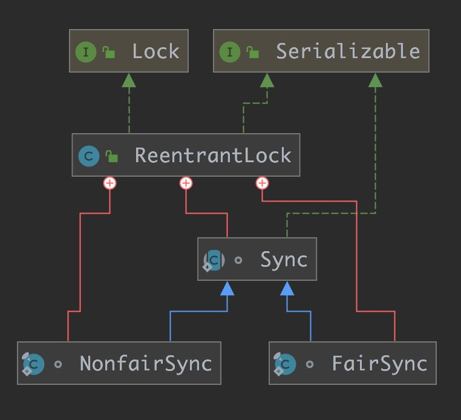
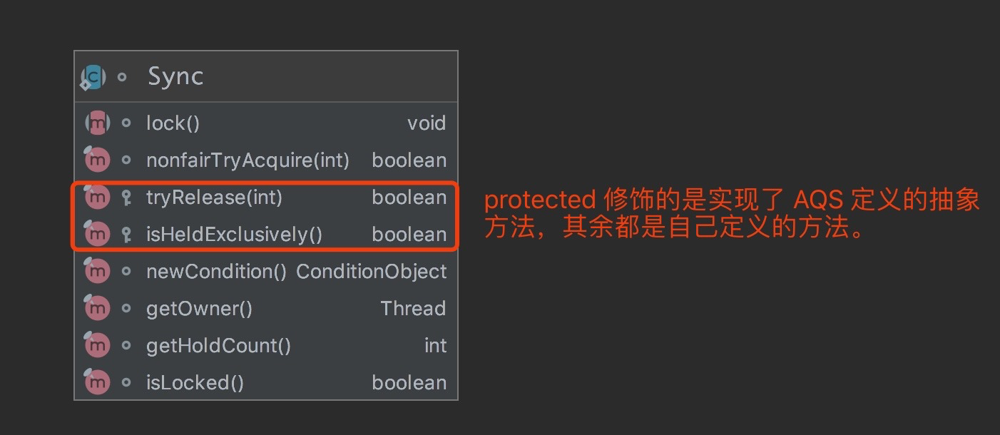
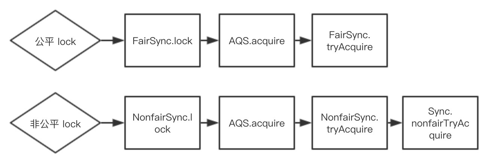

类注释
ReentrantLock 中文我们习惯叫做可重入互斥锁，可重入的意思是同一个线程可以对同一个共 享资源重复的加锁或释放锁，互斥就是 AQS 中的排它锁的意思，只允许一个线程获得锁。
我们来一起来看下类注释上都有哪些重要信息：
- 可重入互斥锁，和 synchronized 锁具有同样的功能语义，但更有扩展性；
- 构造器接受 fairness 的参数，fairness 是 ture 时，保证获得锁时的顺序，false 不保 证；
- 公平锁的吞吐量较低，获得锁的公平性不能代表线程调度的公平性；
- tryLock() 无参方法没有遵循公平性，是非公平的（lock 和 unlock 都有公平和非公平， 而 tryLock 只有公平锁，所以单独拿出来说一说）。
我们补充一下第二点， ReentrantLock 的公平和非公平， 是针对获得锁来说的， 如果是公平 的，可以保证同步队列中的线程从头到尾的顺序依次获得锁，非公平的就无法保证，在释放锁的 过程中，我们是没有公平和非公平的说法的。
ReentrantLock 类本身是不继承 AQS 的，实现了 Lock 接口，如下：
1 | public class ReentrantLock implements Lock, java.io.Serializable {} |
Lock 接口定义了各种加锁，释放锁的方法，接口有如下几个：
1 | public interface Lock { |
ReentrantLock 就负责实现这些接口，我们使用时，直接面对的也是这些方法，这些方法的底 层实现都是交给 Sync 内部类去实现的，Sync 类的定义如下：
1 | abstract static class Sync extends AbstractQueuedSynchronizer {} |
Sync 继承了 AbstractQueuedSynchronizer ， 所以 Sync 就具有了锁的框架， 根据 AQS 的 框架，Sync 只需要实现 AQS 预留的几个方法即可，但 Sync 也只是实现了部分方法，还有一 些交给子类 NonfairSync 和 FairSync 去实现了， NonfairSync 是非公平锁， FairSync 是公 平锁，定义如下：
1 | // 同步器 Sync 的两个子类锁 |
几个类整体的结构如下：

图中 Sync、NonfairSync、FairSync 都是静态内部类的方式实现的，这个也符合 AQS 框架定 义的实现标准。
构造函数
ReentrantLock 构造器有两种，代码如下：
1 | // 无参数构造器，相当于 ReentrantLock(false)，默认是非公平的 |
无参构造器默认构造是非公平的锁，有参构造器可以选择。
从构造器中可以看出， 公平锁是依靠 FairSync 实现的， 非公平锁是依靠 NonfairSync 实现 的。
Sync同步器
Sync 表示同步器，继承了 AQS

从 图中可以看出，lock 方法是个抽象方法，留给 FairSync 和 NonfairSync 两个子类去 实现，我们一起来看下剩余重要的几个方法。
nonfairTryAcquire
1 | // 尝试获得非公平锁 |
通过判断 AQS 的 state 的状态来决定是否可以获得锁，0 表示锁是空闲的；
else if 的代码体现了可重入加锁，同一个线程对共享资源重入加锁，底层实现就是把 state + 1，并且可重入的次数是有限制的，为 Integer 的最大值；
这个方法是非公平的，所以只有非公平锁才会用到，公平锁是另外的实现。
无参的 tryLock 方法调用的就是此方法，tryLock 的方法源码如下：
1 | public boolean tryLock() { |
1 | // Sync 提供的 tryRelease 默认实现，非公平和公平锁都使用 |
tryRelease 方法是公平锁和非公平锁都公用的，在锁释放的时候，是没有公平和非公平的说法 的。
从代码中可以看到，锁最终被释放的标椎是 state 的状态为 0，在重入加锁的情况下，需要重入 解锁相应的次数后，才能最终把锁释放，比如线程 A 对共享资源 B 重入加锁 5 次，那么释放锁 的话，也需要释放 5 次之后，才算真正的释放该共享资源了。
FairSync 公平锁
FairSync 公平锁只实现了 lock 和 tryAcquire 两个方法，lock 方法非常简单，如下：
1 | // acquire 是 AQS 的方法，表示先尝试获得锁，失败之后进入同步队列阻塞等待 |
tryAcquire 方法是 AQS 在 acquire 方法中留给子类实现的抽象方法，FairSync 中实现的源码 如下：
1 | protected final boolean tryAcquire(int acquires) { |
代 码 和 Sync 的 nonfairTryAcquire 方 法 实 现 类 似 ， 唯 一 不 同 的 是 在 获 得 锁 时 使 用 hasQueuedPredecessors 方法体现了其公平性。
NonfairSync 非公平锁
NonfairSync 底层实现了 lock 和 tryAcquire 两个方法，如下:
1 | final void lock() { |
知识串联
以上内容主要说了 ReentrantLock 的基本结构，比较零散，那么这些零散的结构如何串联起来 呢？我们是通过 lock、tryLock、unlock 这三个 API 将以上几个类串联起来， 我们来一一看 下。
lock 加锁
lock 的代码实现：
1 | public void lock() { sync.lock(); } |
其底层的调用关系(只是简单表明调用关系，并不是完整分支图)如下：

tryLock 尝试加锁
1 | // 无参构造器 |
unlock 释放锁
unlock 释放锁的方法， 底层调用的是 Sync 同步器的 release 方法， release 是 AQS 的方 法，分成两步：
- 尝试释放锁，如果释放失败，直接返回 false；
- 释放成功，从同步队列的头节点的下一个节点开始唤醒，让其去竞争锁。
这个地方不要晕，已经在队列中的节点线程当然不会竞争,能竞争的是那些来抢锁，新出现的线程，还没被加到队列中。而锁的意义就在这，解决资源的竞争。
unLock 的源码如下：
1 | // 释放锁 |
总结
AQS 搭建了整个 锁架构，子类锁只需要根据场景，实现 AQS 对应的方法即可，不仅仅是 ReentrantLock 是这 样，JUC 中的其它锁也都是这样，只要对 AQS 了如指掌，锁其实非常简单。

...
...
This is copyright.